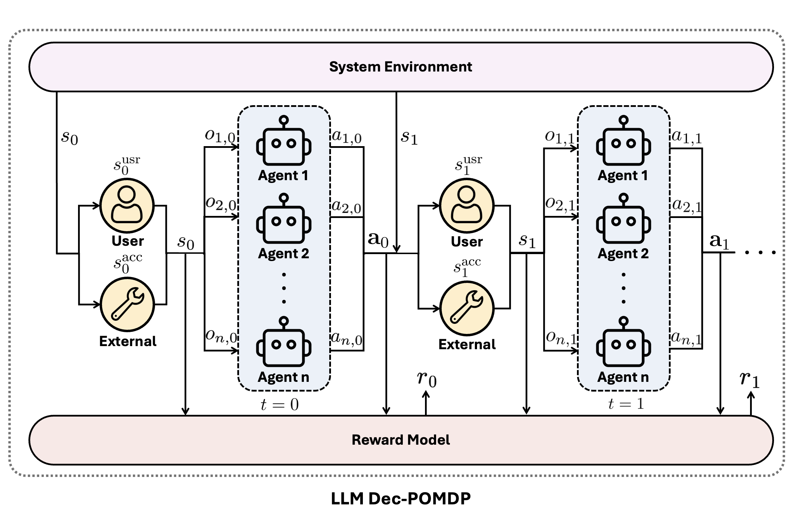
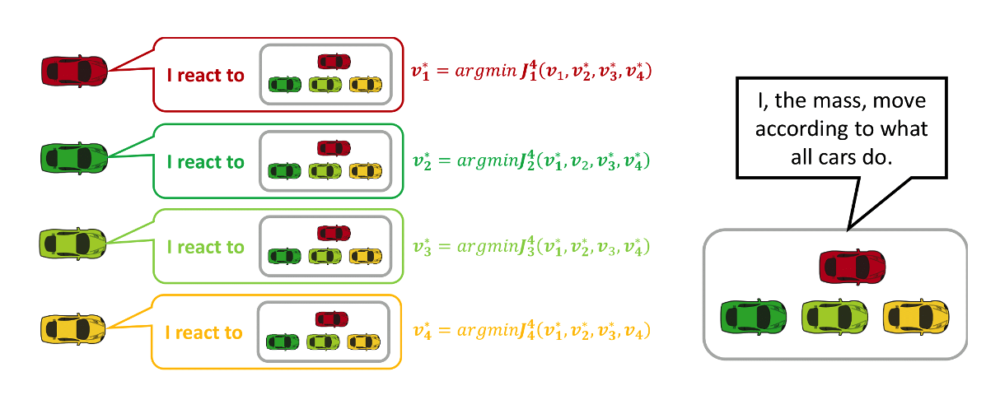

Decentralized LLM collaboration allows specialized models to divide complex tasks according to their strengths and run inference in parallel, improving efficiency and enabling more flexible deployment. We present a theory of fully decentralized LLM collaboration and propose multi-agent reinforcement learning algorithms, including MAGRPO, CoLLM-DC, and CoLLM-CC, to optimize this collaboration. We also develop applications to demonstrate that fine-tuned small models can collaborate effectively to match or outperform a single large model [ref1, ref2].

Mean-field game (MFG) theory studies decision-making in multi-agent systems with very large populations. It connects stochastic modeling and distributed control. We study MFGs for autonomous vehicle navigation, where each vehicle agent makes decisions about velocity control and route choice [ref] based on the current population density. The actions of all vehicles jointly drive the evolution of population density, and this process repeats until it converges to an equilibrium. We have proposed various approaches to address practical challenges related to fine granularity [ref], scalability, and computational efficiency [ref1, ref2].
